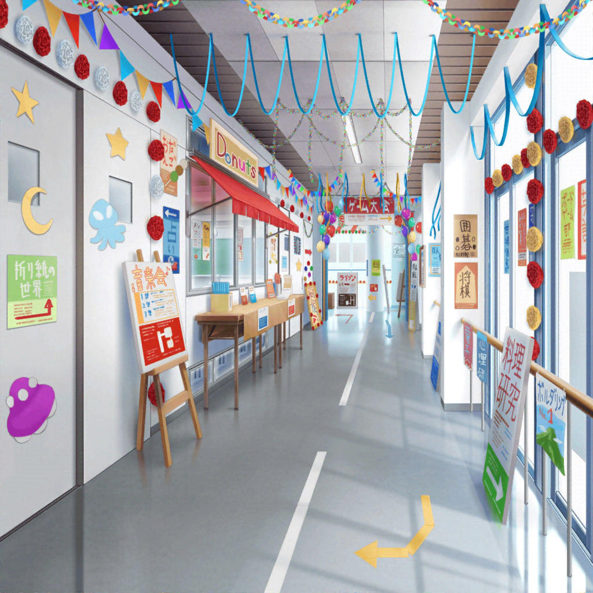

羽丘女子学園 文化祭
千聖
……さて。本番も終わって、みんなにも挨拶ができたし……
あ、薫！
薫
やあ、ちーちゃ……千聖。どうしたんだい？
千聖
薫、これから文化祭をまわらない？
あなた、きっと暇でしょ？
薫
暇かどうかは私が決めることさ……でも、君のような
ワガママなお姫様のためなら……
千聖
ありがとう♪それじゃあさっそくまわってみましょう。
まずは外の屋台を見ましょう
千聖
羽丘の文化祭ってすごいのね。規模が大きくて驚いたわ。
……あ！ 薫、見て！ わたあめだって。おいしそうね♪
薫
ああ、おいしそうだね。それじゃあ２つ買おうか。
すみません、わたあめを……
生徒A
わっ！ し、白鷺千聖さんだ！
隣にいるのは瀬田さん……！
薫
やあ。姫のためにわたあめを２つお願いするよ
千聖
あら、あなたもわたあめ好きだったのね？ かおちゃ……
薫
はっ、はっはははっ！
いやあ、わたあめが好きだとは、千聖もけっこうお子様なんだね？
フフ、そんなところもかわいいなあ！
千聖
ふふっ♪ そうよ、私の味覚はまだお子様なの。
さあ、行きましょう薫。 わたあめ、どうも
生徒A
ありがとうございましたあ〜。
……白鷺千聖って、思ったよりもテンション高いんだな〜
薫
ちーちゃん……その、『かおちゃん』ていうのを人前で言うの
やめてよ……２人のときならまだいいけど
千聖
ごめんなさい。文化祭の空気にあてられて、
少し浮かれているみたい
薫
まあ、楽しんでるならいいけど……
千聖
あ、輪投げだって！ 景品は何かしら？ 行ってみましょう♪
千聖
次は射的よ！
千聖
次は……型抜き？ なんでもあるわね
千聖
はあ、楽しかった♪
私、こんな風に文化祭をまわったのははじめてなの
薫
ちーちゃん……一体どういう風のふきまわしだい？
普段なら、変装してなるべく人と関わらないようにするのに
千聖
……あなたといると芸能人の白鷺千聖じゃない
私でいられるの
薫
ちーちゃん……
千聖
そう、今の私は『ちーちゃん』
千聖
最初のうちは、こんな私に違和感があったのだけど、
今では徐々に心地よくなってきてしまって。
薫、あなたって不思議な人ね？
薫
あ、はは……そうかな？
生徒B
ほら、チャンスだよっ！ 行ってきなって！
生徒C
で、でも……っ！ 千聖ちゃん、プライベートだし……！
千聖
ん……？
生徒B
ほら、こっち見てるよっ！
チャンスチャンス！
生徒C
よ、よーし……あのっ！ すみません……っ！
白鷺千聖ちゃん、ですよね？
千聖
はい、そうです
生徒C
あっ、あの！ 私……小さい頃からずっと千聖ちゃんのファンで！
小さい頃、見てました！ 『小学生弁護士 マコ』！
千聖
えっ、あのドラマを……？
生徒C
はい！ あのドラマで千聖ちゃんを見て、ファンになったんです。
私と同じくらいの年なのに、すごいなあ〜って
生徒C
最初は、女優の千聖ちゃんがアイドルバンドって聞いて
すごくビックリしました。でも、千聖ちゃんの挑戦なんだから
私は、応援しようって思って……
千聖
……
生徒C
パスパレではすごく大変なことがあったけど、
それも乗り越えて……やっぱり千聖ちゃんて無敵だなあ〜って
生徒C
いろんなことに挑戦して、
なんでもできちゃう千聖ちゃんのこと、尊敬してますっ！
千聖
……！
生徒C
あう、あ、あの……すみません、一方的にたくさん
喋っちゃって……！
千聖
いいえ、いいんです。すごく、嬉しい……ありがとう
生徒C
これからも応援してますっ！ あの、頑張ってくださいっ！
千聖
……
薫
ちーちゃん、よかったじゃないか！
素敵なファンの子だったね
千聖
……私、やっぱりジュリエットにはなれそうもないわ
薫
え？ どういうことだい？
千聖
私は『白鷺千聖』だから、という尺で何かを判断されるのが
あまり好きじゃなかったの。……でも、あんな風にずっと
応援してくれる人がいるなら……
千聖
そのたったひとりの為に、
『白鷺千聖』でいなくちゃ失礼じゃない
薫
ちーちゃん……
千聖
いいえ……私は『白鷺千聖』。
バラはバラという名前があるからこそ、美しく、いい香りがする。
やっぱり私はそう思うの
千聖
私も、バラであり続けたいと思う
薫
……ふ、フフ……なるほど。君のその儚くも美しい決意、
私はとても胸を打たれたよ
千聖
……あなた、私が言ったこと、本当に理解しているの？
薫
ああ、もちろんさ。つまり……そういうことだろう？
千聖
……そういうことよ
薫
そういうことさ。
……『千聖』